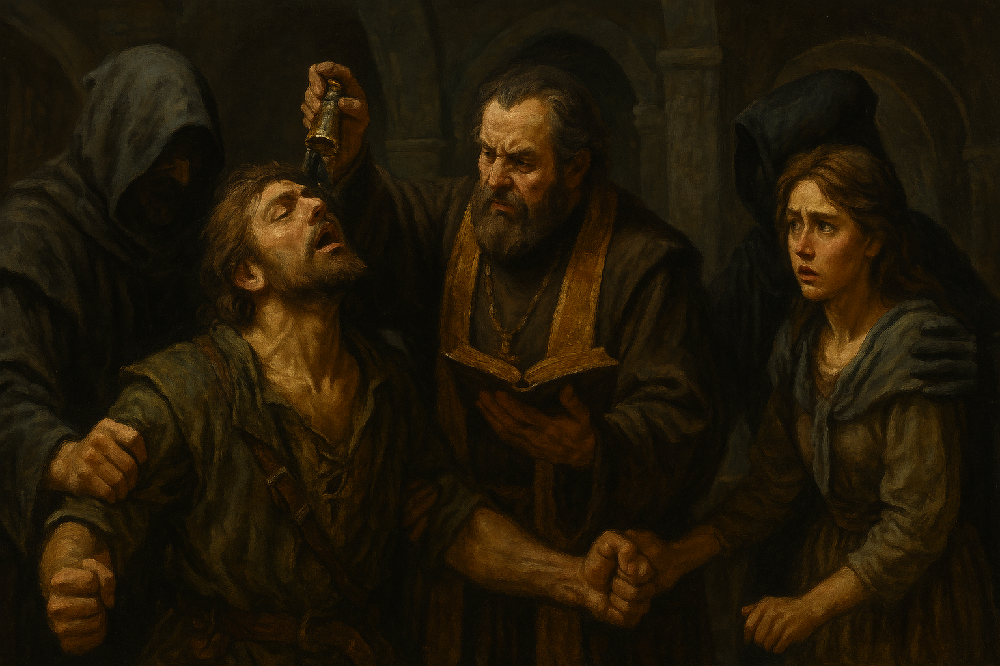

Chapter 3: Lotus Petals
Dark Petals

Dark Petals
15048.11.18
Brown 的眼前一片模糊與混沌，幾秒鐘後，他站穩了身體，發現自己在同樣的房間內，但打鬥的痕跡都不見了，Maylee 和 Matilda 也不在房間內。聽見緊閉的房門外似乎傳來腳步聲，Brown 躲進房間的衣櫥內，從縫隙窺視。他看見 Maylee 和 Matilda 走進房間內，意興闌珊的討論著今天都沒有接到客人，剛剛的兩名兄弟也沒有點名他們。而從描述推斷，他們口中的兄弟，似乎就是 Caleb 兄弟。
不久後，Matilda 暫時離開了房間，Brown 則抓準了時機，從衣櫥跳出，對著 Maylee 的腳猛然一劃，並趕緊用另一隻手捂住他的嘴，不讓他尖叫。在 Brown 的威脅下，Maylee 不願透露 Mr. Muffins 的藏身處，Brown 只好再用劍柄朝他的頭敲下去。最終，Maylee 終於乖乖就範，表示自己會帶 Brown 回他的住處，Mr. Muffins 就關在那。
推開房門，Brown 看見 Matilda 正朝這裡走來，要脅 Maylee 不准耍小手段，否則就把他殺了，於是 Maylee 向 Matilda 撒謊，表示 Brown 要帶他暫時離開這裡，而且他身上的傷不用擔心。
走出 Rainbow Jungle，因為 Maylee 的腳傷，走到他家的路程變得十分久，甚至也引起路人的關心。路人們建議可以帶他去服從神社讓神父照看，但 Brown 表示自己可以幫 Maylee 治療。
來到 Maylee 的家門口，Maylee 掏出鑰匙，將門打開。兩人走入房子關上門後，Maylee 便倒在門口處，失去了意識。Brown 聽見遠處傳來狗吠聲，於是先將 Maylee 扛起，放到床上，接著他便看見房間角落的鐵籠內關著 Mr. Muffins。Brown 發現 Maylee 身體狀況極差，於是先去外頭買了一些醫療用品，簡單為 Maylee 治療後，確保他不在垂死邊緣，便將水淋在他的臉上。審問了 Maylee，他表示關押 Mr. Muffins 的鐵籠鑰匙在 Matilda 手上，但 Brown 不相信。以死威脅下，Maylee 指向門口的盆栽，接著便倒了下去。
走向門口的盆栽，Brown 這時才發現這間房子給他一種很奇異的感覺，雖然傢俱都十分破舊，但是卻像是臨時擺放的，而且房子牆壁上畫了不少文字與符號，給他一種拉索斯的氛圍。門口旁的盆栽，種的植物竟然也是黑蓮花。Brown 拿起盆栽，發現盆栽上也畫了不少拉索斯的符號，底下放著的是一把鑰匙。此時拿著盆栽的 Brown 腦中響起了聽不懂的語言細語著。頭痛的 Brown 雙手一放，盆栽掉落到了地上，碎了開來。
Brown 決定先去將 Mr. Muffins 解鎖。見到 Brown，Mr. Muffins 開心地汪汪叫，然後透過心電感應，告訴 Brown 這裡很危險，建議他把 Maylee 殺了。Brown 感到訝異，他還有事情想向 Maylee 詢問，但 Mr. Muffins 表示 Maylee 不過是個小囉囉，從他身上根本問不到什麼事。同時，Mr. Muffins 也表示這間房子是 Maylee 和 Matilda 共同居住的。
到底該聽 Mr. Muffins 的話，將 Maylee 殺了？還是該維持自己的決定，等 Maylee 清醒後審問他？Brown 陷入了沉思。最終，Brown 決定威脅 Maylee，若把他來到這裡的事洩漏出去，自己便會殺了他。
Brown 將盆栽內的黑蓮花花瓣通通採摘下來後，便帶著 Mr. Muffins 離開了。一人一狗前往遊客中心，等待 Queenie 下班。Queenie 下班後，兩人一同前往附近的艾德蒙餐酒館用餐，十分愉快，就連 Mr. Muffins 也享用了他能吃的食物。
吃飽後，兩人來到了恬靜花園散步。Queenie 表示這是自己第一次不是以工作人員的身份走在這裡，感覺很不一樣，同時，也很感謝 Brown 今晚的晚餐與陪伴。
離開花園後，兩人準備前往教堂去。保險起見，Brown 想先去找 Caleb 兄弟。他先到了酒館買了一手啤酒，準備去拜訪 Caleb 兄弟，然而，他們的當鋪已經關門了。Queenie 表示也許他們在酒吧內也說不定，於是 Brown 便折回酒吧。的確，兩兄弟正在酒吧內，然而 Tommy 看起來已經醉到不省人事了，甚至吐在 Brown 和 Roger 兩人身上。在 Brown 和 Roger 合作之下，他們先把 Tommy 搬到酒吧的櫃檯內，請酒保幫忙照料他。接著 Brown、Queenie、Roger 和 Mr. Muffins 便離開了酒館。Brown 先去了一趟服飾店，換了套衣服，Roger 也先帶大家到了他家去，更衣後大家便準備前往教堂。
在 Roger 家門口，Brown 看見了一個可疑的人影。仔細一看，那人應該是 Matilda，Brown 就這樣看著他偷偷摸摸的溜進了教堂內。接著，三人一狗便也走進了教堂內，卻沒見到 Matilda 的身影，只有 Karu 神父。
Brown 和 Karu 神父聊了幾句，神父邀請他來到台前，為他祝福。Brown 不疑有他，走了上去。殊不知，Karu 神父表示要為他受洗成為拉索斯教徒。此刻，身後冒出了數位身穿黑色斗篷的人，牢牢抓住了 Brown，Brown 從眼角餘光，也看見台下的 Roger 不懷好意的控制住了 Queenie。接著，Brown 就失去了意識。